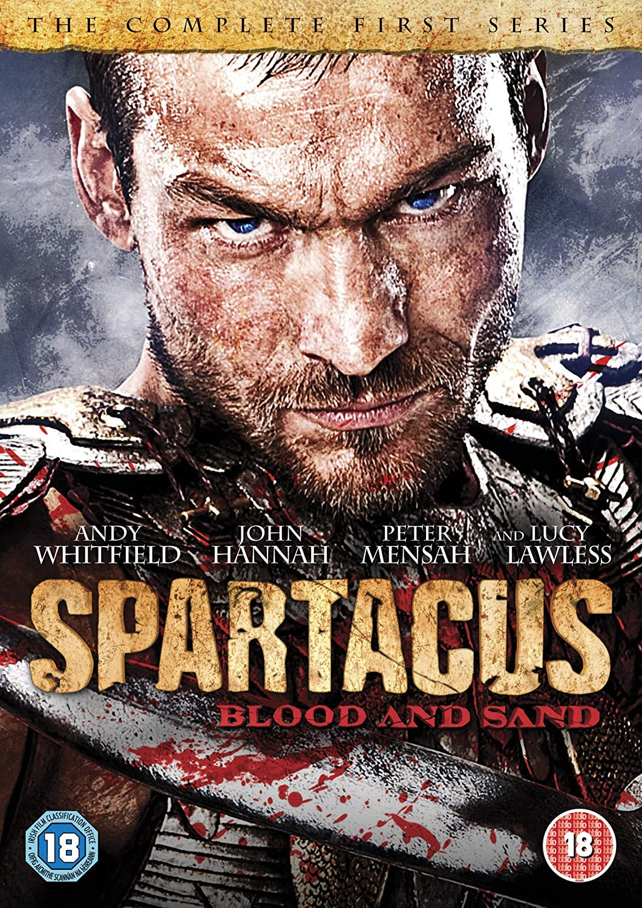
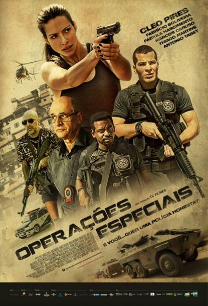
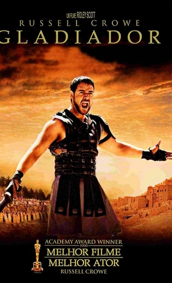

TOP 10 NO BRASL
-

O rebelde Spartacus, nascido e criado escravo, é vendido para o treinador gladiador Batiatus. Depois de
semanas sendo treinado para matar na arena, Spartacus se rebela contra seus donos e lidera os outros
escravos em uma rebelião. À medida que os rebeldes vão de cidade em cidade, os seus números aumentam
conforme os escravos fugidos se juntam a eles. Sob a liderança de Spartacus, eles vão a caminho do sul
da Itália, onde eles podem atravessar o mar e voltar para suas casas.
-
 Ao desembarcar na Normandia, no dia 6 de junho de 1944, o Capitão Miller recebe a missão de comandar um
grupo do Segundo Batalhão para o resgate do soldado James Ryan, o caçula de quatro irmãos, dentre os
quais três morreram em combate. Por ordens do chefe George C. Marshall, eles precisam procurar o
soldado e garantir o seu retorno, com vida, para casa.
Ao desembarcar na Normandia, no dia 6 de junho de 1944, o Capitão Miller recebe a missão de comandar um
grupo do Segundo Batalhão para o resgate do soldado James Ryan, o caçula de quatro irmãos, dentre os
quais três morreram em combate. Por ordens do chefe George C. Marshall, eles precisam procurar o
soldado e garantir o seu retorno, com vida, para casa.
-

Após ser aprovada no concurso para polícia civil, Francis (Cleo) passa a frequentar o curso de
habilitação para policial. Isso se passa no mesmo período em que ocorreu a invasão no Complexo do
Alemão, com traficantes de vários morros cariocas fugindo para cidades periféricas.
-

Maximus é um poderoso general romano, amado pelo povo e pelo imperador Marcus Aurelius. Antes de sua
morte, o Imperador desperta a ira de seu filho Commodus ao tornar pública a sua predileção em deixar o
trono para Maximus. Sedento pelo poder, Commodus mata seu pai, assume a coroa e ordena a morte de
Maximus, que consegue fugir antes de ser pego, e passa a se esconder como um escravo e gladiador
enquanto vai atrás de vingança.
-
Nascimento, capitão da Tropa de Elite do Rio de Janeiro, é designado para chefiar uma das equipes que
tem como missão apaziguar o Morro do Turano. Ele precisa cumprir as ordens enquanto procura por um
substituto para ficar em seu lugar. Em meio a um tiroteio, Nascimento e sua equipe resgatam Neto e
Matias, dois aspirantes a oficiais da PM. Ansiosos para entrar em ação e impressionados com a
eficiência de seus salvadores, os dois se candidatam ao curso de formação da Tropa de Elite.
-
 No exuberante mundo alienígena de Pandora vivem os Na'vi, seres que parecem ser primitivos, mas são
altamente evoluídos. Como o ambiente do planeta é tóxico, foram criados os avatares, corpos biológicos
controlados pela mente humana que se movimentam livremente em Pandora. Jake Sully, um ex-fuzileiro
naval paralítico, volta a andar através de um avatar e se apaixona por uma Na'vi. Esta paixão leva
Jake a lutar pela sobrevivência de Pandora.
No exuberante mundo alienígena de Pandora vivem os Na'vi, seres que parecem ser primitivos, mas são
altamente evoluídos. Como o ambiente do planeta é tóxico, foram criados os avatares, corpos biológicos
controlados pela mente humana que se movimentam livremente em Pandora. Jake Sully, um ex-fuzileiro
naval paralítico, volta a andar através de um avatar e se apaixona por uma Na'vi. Esta paixão leva
Jake a lutar pela sobrevivência de Pandora.
-
 Acompanhe a história de Desmond T. Doss, um médico do exército americano que, durante a Segunda
Guerra Mundial, se recusa a pegar em armas. Durante a Batalha de Okinawa ele trabalha na ala médica
e salva cerca de 75 homens.
Acompanhe a história de Desmond T. Doss, um médico do exército americano que, durante a Segunda
Guerra Mundial, se recusa a pegar em armas. Durante a Batalha de Okinawa ele trabalha na ala médica
e salva cerca de 75 homens.
-
 A série conta a história de Mikhael (Marcelo Mello Jr.), líder da principal equipe do BOPE.
Quando um dos seus amigos é ferido em uma operação, ele busca vingança e acaba em conflito
com a alta cúpula política do estado.
A série conta a história de Mikhael (Marcelo Mello Jr.), líder da principal equipe do BOPE.
Quando um dos seus amigos é ferido em uma operação, ele busca vingança e acaba em conflito
com a alta cúpula política do estado.
-
A cidade de Atlantis, que já foi lar de uma das mais avançadas civilizações do mundo, agora é um reino
submerso dominado pelo ganancioso Rei Orm. Com um vasto exército a seu dispor, Orm planeja conquistar
tanto os demais reinos do oceano, quanto o mundo da superfície. Em seu caminho está Aquaman, meio-humano
e meio-atlante, e verdadeiro herdeiro do trono. Com a ajuda da princesa Mera, Aquaman precisa recuperar
o lendário Tridente de Atlan e aceitar seu destino como protetor das profundezas.
-
 Em 480 A.C., existe uma guerra entre a Pérsia, liderada pelo rei Xerxes, e a Grécia. Na batalha de
Thermopylae, Leônidas, rei da cidade grega de Sparta, lidera seu guerreiros em desvantagem contra o
massivo exército persa. Mesmo sabendo que a morte certa os espera, seus sacrifícios inspiram toda
a Grécia a unir-se contra o seu inimigo comum.
Em 480 A.C., existe uma guerra entre a Pérsia, liderada pelo rei Xerxes, e a Grécia. Na batalha de
Thermopylae, Leônidas, rei da cidade grega de Sparta, lidera seu guerreiros em desvantagem contra o
massivo exército persa. Mesmo sabendo que a morte certa os espera, seus sacrifícios inspiram toda
a Grécia a unir-se contra o seu inimigo comum.